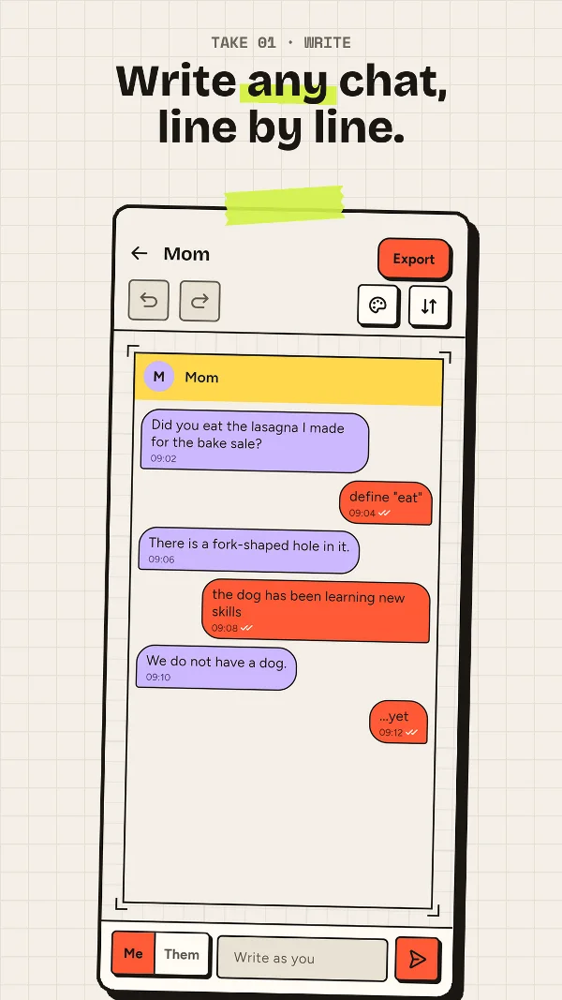
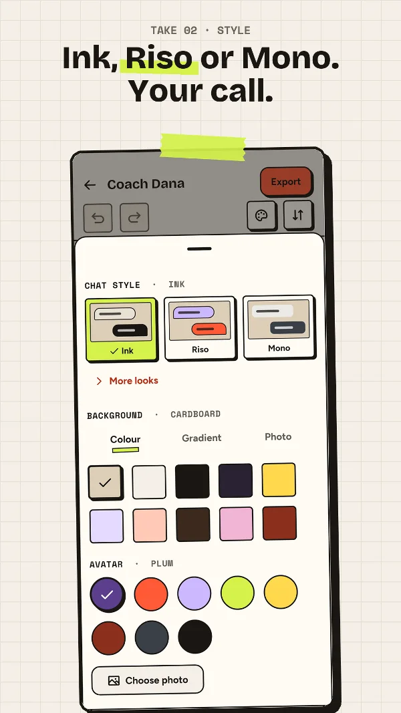
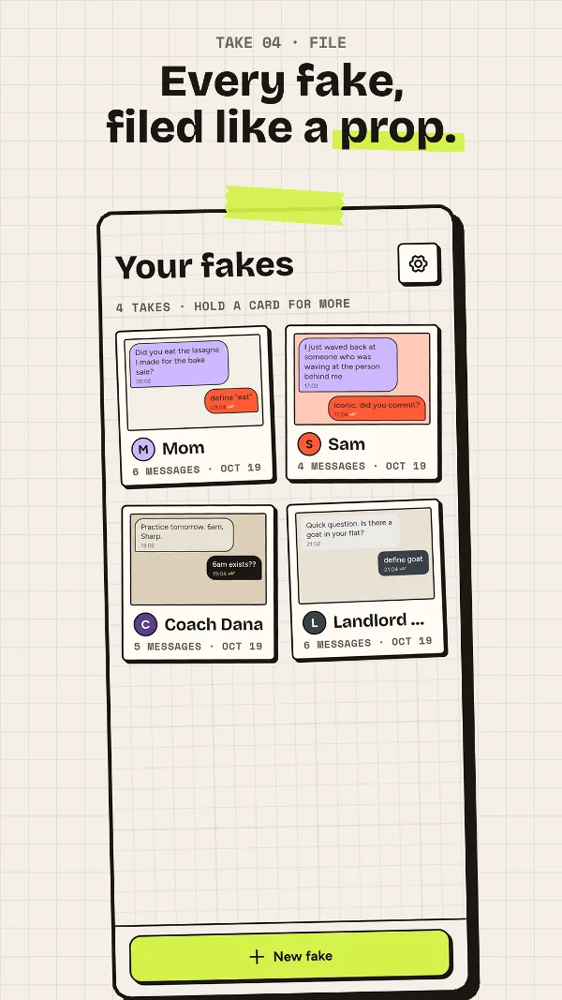

Fake Chat Maker & Text Message
冗談やストーリー用に、偽のメッセージのやり取りを書き、スタイルを整えて、画像として保存できます。お遊び専用です。
- アカウント不要
- オフラインで動作
- メッセージ数の制限なし

アカウント不要 · オフラインで動作
Fake Chat Maker & Text Message冗談やストーリーのためのフェイクチャット
アプリの画面3点


A面：できること
- A1チャットの両側を自分で書けます。吹き出しをタップして編集、長押しで送信者を切り替え
- A2時刻と、配信済み・既読のチェックを変更できます
- A3ドラッグでメッセージを並べ替え。どの変更も元に戻す・やり直しが可能
- A4チャットのスタイルは3種類。背景は自分で選べます：色、グラデーション、写真
- A5チャットを画像として保存して共有したり、ファイルにバックアップしたりできます
B面：動作のしかた
- B1アカウントもサインインも不要。オフラインで動作
- B2無料版でも、チャット数やメッセージ数に制限はありません
- B3入力中や編集中に広告が出ることはありません
- B4小さな買い切り1回で、広告と透かしがずっと消えます
- B5実際のメッセージは送らず、どのメッセージサービスにも接続しません
解説
友だちへのいたずら、ストーリー投稿、動画や学校の課題、プレゼン用のモックアップに向いています。
注記
お遊びと、創作としてのストーリーづくり専用です。いかなるメッセージアプリや企業とも、提携・推奨・関連はありません。スクリーンショットを、人をだましたり、嫌がらせをしたり、傷つけたりするために使わないでください。